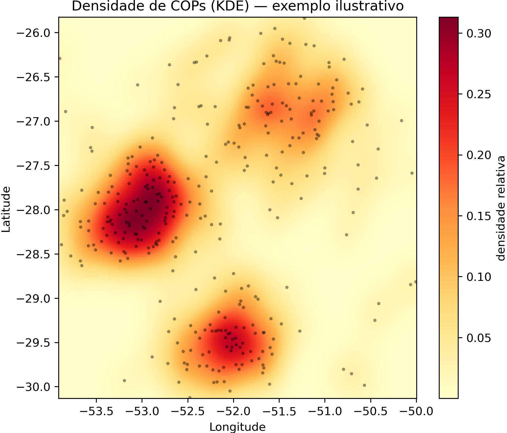

Densidade e autocorrelação espacial
Esta página parte de uma pergunta simples — onde se concentram as COPs? — e avança até uma pergunta estatística — essa concentração é um padrão real ou poderia ocorrer ao acaso?. O caminho passa pela densidade de pontos (KDE), pela autocorrelação global (I de Moran) e pela detecção de agrupamentos locais (LISA e Getis-Ord Gi*).
Densidade de pontos: KDE
Quando há muitos pontos sobrepostos — milhares de COPs —, o mapa de pontos vira uma mancha ilegível. A estimativa de densidade por kernel (KDE, Kernel Density Estimation) resolve isso transformando os pontos em uma superfície contínua de densidade: onde há muitas COPs próximas, a superfície é alta; onde são esparsas, é baixa. É o “mapa de calor” dos sinistros.
import numpy as np
from scipy.stats import gaussian_kde
# Coordenadas das COPs de um fenômeno (ex.: seca), como arrays NumPy.
coords = np.vstack([longitudes, latitudes])
# KDE gaussiano; 'bw_method' controla o grau de suavização (bandwidth).
kde = gaussian_kde(coords, bw_method=0.2)
# Avalia a densidade sobre uma grade regular para depois plotar como mapa de calor.
grade_lon, grade_lat = np.meshgrid(
np.linspace(longitudes.min(), longitudes.max(), 200),
np.linspace(latitudes.min(), latitudes.max(), 200),
)
densidade = kde(np.vstack([grade_lon.ravel(), grade_lat.ravel()])).reshape(grade_lon.shape)
O parâmetro de suavização (bandwidth) é decisivo: pequeno demais, o mapa fica ruidoso e mostra cada ponto; grande demais, borra tudo e esconde os padrões. Comparar a densidade de fenômenos diferentes (seca × chuva excessiva) revela geografias de risco distintas.
{kind=link}

Figura 31 - Mapa de densidade (KDE) de COPs — exemplo ilustrativo com dados sintéticos. Os pontos pretos são COPs fictícias; a superfície de cor mostra a densidade relativa. As manchas quentes correspondem às concentrações que o KDE realça.
I de Moran global: existe padrão?
O KDE mostra onde há concentração, mas não diz se ela é estatisticamente significativa. Para isso, passa-se de pontos para áreas (ex.: contagem de COPs por município) e aplica-se o I de Moran global [73], que mede a autocorrelação espacial — o quanto valores parecidos tendem a estar perto uns dos outros. É a tradução estatística da Lei de Tobler: “tudo está relacionado com tudo, mas coisas próximas estão mais relacionadas que coisas distantes” [72].
O cálculo exige uma matriz de pesos espaciais, que define quem é vizinho de quem. O critério Queen considera vizinhos os municípios que compartilham qualquer fronteira ou vértice:
from libpysal.weights import Queen
from esda.moran import Moran
# Vizinhança Queen a partir do GeoDataFrame de municípios com a contagem de COPs.
w = Queen.from_dataframe(gdf_municipios)
w.transform = 'r' # padronização por linha
moran = Moran(gdf_municipios['total_cops'], w)
print(f'I de Moran: {moran.I:.3f} | p-valor (permutação): {moran.p_sim:.3f}')
Um I positivo e significativo (p-valor baixo) indica agrupamento: municípios com muitas COPs tendem a ter vizinhos também com muitas COPs. A significância vem de uma permutação de Monte Carlo — os valores são embaralhados centenas de vezes no espaço para construir a distribuição esperada sob a hipótese de aleatoriedade, e o I observado é comparado a ela.
🖼️ Imagem sugerida (IMG-TODO)
- Imagem ideal:
Diagrama de dispersão de Moran (Moran scatterplot) esquemático, com os quatro quadrantes (Alto-Alto, Baixo-Baixo, Alto-Baixo, Baixo-Alto) e a reta de regressão cuja inclinação corresponde ao I de Moran.
- Função:
dá uma imagem mental do que o I de Moran mede, complementando o cálculo apresentado no código.
- Busca sugerida:
“Moran scatterplot quadrants diagram”; “diagrama de dispersão de Moran quadrantes”
- Fonte provável:
documentação GIS (GeoDa/PySAL), Wikimedia Commons
- Facilidade:
alta
Nota
Municípios sem vizinhos (islands) precisam ser tratados antes do cálculo (w.islands),
senão distorcem a matriz de pesos.
LISA: onde estão os clusters
O I global resume tudo em um único número — diz que há padrão, mas não onde. Os LISA (Local Indicators of Spatial Association, ou I de Moran local) [74] abrem esse número por município, classificando cada um em quatro tipos de cluster:
Alto-Alto (AA): muitas COPs cercado de vizinhos com muitas COPs — o núcleo de um hotspot.
Baixo-Baixo (BB): poucas COPs entre vizinhos com poucas COPs.
Alto-Baixo (AB) e Baixo-Alto (BA): outliers espaciais (um valor destoa da vizinhança).
from esda.moran import Moran_Local
lisa = Moran_Local(gdf_municipios['total_cops'], w)
# 'q' indica o quadrante (1=AA, 2=BA, 3=BB, 4=AB); 'p_sim' a significância local.
gdf_municipios['cluster'] = lisa.q
gdf_municipios['significativo'] = lisa.p_sim < 0.05
Os clusters Alto-Alto significativos são exatamente as regiões que merecem priorização na fiscalização — concentrações de COPs que não se explicam pelo acaso.
🖼️ Imagem sugerida (IMG-TODO)
- Imagem ideal:
Mapa de clusters LISA (mapa coroplético) com as categorias coloridas — Alto-Alto, Baixo-Baixo, Alto-Baixo, Baixo-Alto e não significativo.
- Função:
ilustra como a LISA “abre” o I global em um mapa acionável, localizando os hotspots e outliers descritos na lista de tipos de cluster.
- Busca sugerida:
“LISA cluster map example”; “mapa de clusters LISA exemplo”
- Fonte provável:
documentação GeoDa/PySAL, Wikimedia Commons, artigos abertos
- Facilidade:
alta
Getis-Ord Gi*: hotspots e coldspots
O Gi* é complementar ao LISA [81]: em vez de classificar em quadrantes, ele produz um escore z que mede a intensidade de hotspots (agrupamentos de valores altos) e coldspots (de valores baixos). Escores z altos e positivos marcam hotspots robustos.
from esda.getisord import G_Local
gi = G_Local(gdf_municipios['total_cops'], w, star=True)
gdf_municipios['gi_z'] = gi.Zs # escore z: alto e positivo = hotspot
Duas armadilhas a evitar
MAUP — o problema da unidade de área modificável. Os resultados mudam conforme a unidade espacial escolhida. Contar COPs por município ou por uma grade regular pode dar valores de Moran e mapas de cluster diferentes para os mesmos dados [75]. Não existe escala “certa” única — por isso é bom comparar mais de uma e desconfiar de conclusões que só aparecem em uma escala específica.
🖼️ Imagem sugerida (IMG-TODO)
- Imagem ideal:
Ilustração do MAUP — os mesmos pontos agregados por diferentes grades ou unidades de área (zonas e escalas distintas) produzindo resultados diferentes.
- Função:
torna visual o problema da unidade de área modificável discutido no parágrafo, mostrando por que a escolha da escala muda o resultado.
- Busca sugerida:
“modifiable areal unit problem MAUP illustration”; “MAUP problema unidade de área modificável exemplo”
- Fonte provável:
Wikimedia Commons, documentação GIS, artigos abertos
- Facilidade:
média
Falácia ecológica [76]. Um padrão observado no agregado (ex.: municípios com mais COPs tendem a ter certa característica) não pode ser transferido automaticamente para o indivíduo (uma gleba específica daquele município). Conclusões sobre áreas não são conclusões sobre as glebas dentro delas — confundir os dois níveis leva a erro de interpretação e, no limite, a injustiça na análise de um caso concreto.